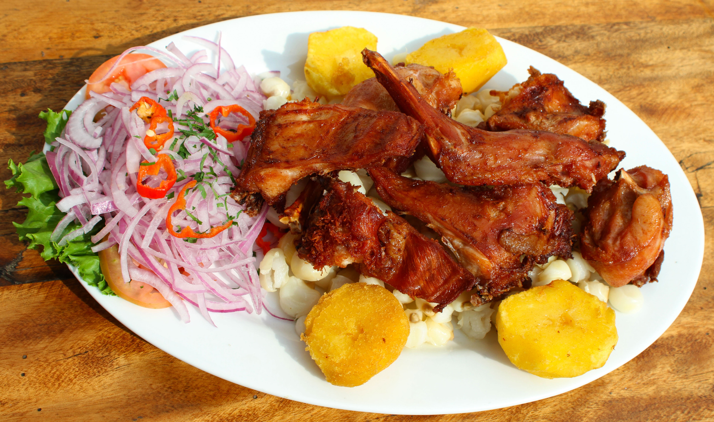

Favoritos:

Pachamanca
10 de abril del 2019
Es un plato típico y tradicional de Huancavelica, que consiste en armar un horno de piedras en forma piramidal y sobre un hoyo que se cava en la tierra, luego se hornea con leña hasta que las piedras se blanqueen por la alta temperatura, se abre el horno con bastante cuidado, se limpian las piedras sobre las cuales se colocan las papas, habas, mashuas, ocas, las carnes bien aderezadas de res, cordero, cerdo y cuy; queso aderezado; humitas hechas de maíz molido y fresco, saladas y dulces; luego se cubre con paja muy limpia, sobre el cual se pone bastante marmaquilla, hierba esta que le da el olor característico a la pachamanca, luego de esta se cubre con tela gruesa y finalmente tierra en abundancia.
Después de una hora se abre el horno y todo está listo, se sacan los alimentos bien clasificados y se procede a servir la mesa. Esta faena la realizan todos los miembros de la familia.
Escribe un Comentario:
Luis: Disfrutando de la pachamanca
Catherine: Pachamanca Huancavelicana... misky misky
Rasoul: El secreto de la pachamanca, marmaquilla
Picante de Cuy
10 de abril del 2019
Es preparado en todo acontecimiento social y tiene como ingredientes; cuyes, aceite, ajo molido, ají panca, galleta molida, arroz, papas, huevo, aceituna, lechuga, cebollas, sal, comino, entre otros.
Cuy Dorado Otra variedad del plato es servir el cuy bien dorado y crocante con acompañamiento de ensalada de lechuga.

Escribe un Comentario:
Nery: Que rico mi plato preferido
Ronald: Solo quiero su wacchankita buen tiempo que no lo veo
Luz: Mas rico es con arroz y trigo y su sarsaaaaaaaaaaaaaaaa